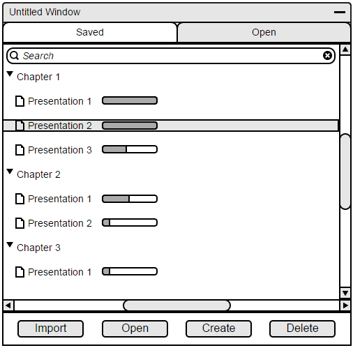
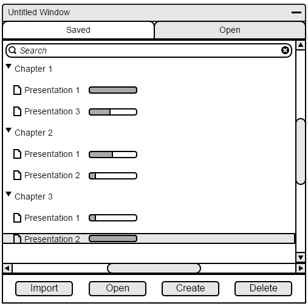
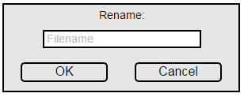

The file manager will allow for organization of files by allowing drag movement and renaming.
As shown in Figures 109 and 110, a user can drag a file into another folder.
The file manager won't allow moving for files within the same folder, as files will be organized numerically
or alphabetically.

Figure 109: Selecting file.

Figure 110: Moving file.

Figure 111: Renaming a file.